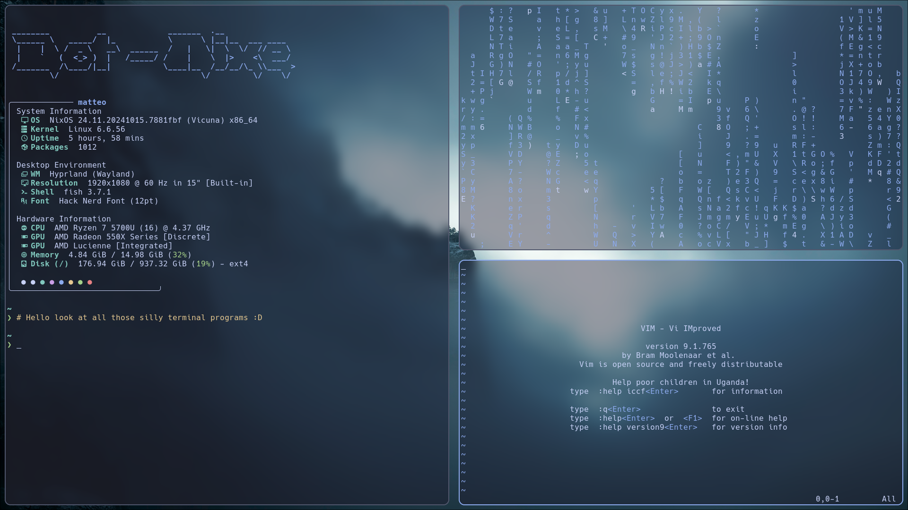
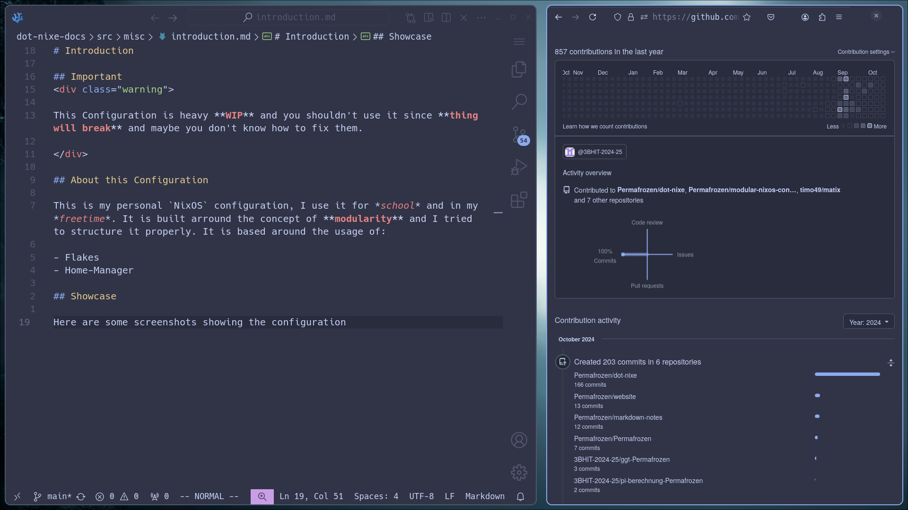
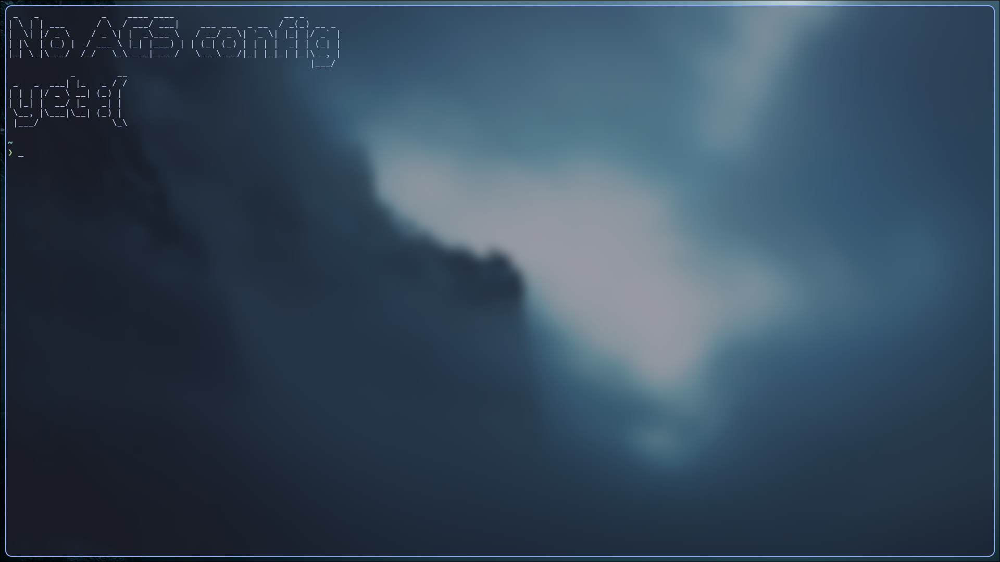

Introduction
Important
This Configuration is heavy WIP and you shouldn’t use it since thing will break and maybe you don’t know how to fix them.
About this Configuration
This is my personal NixOS configuration, I use it for school and in my freetime. It is built arround the concept of modularity and I tried to structure it properly. It is based around the usage of:
- Flakes
- Home-Manager
- Stylix (optional)
Showcase
  
First Steps
In the following chapters, you will learn how to install and use this config. Please note that my config is WIP and not stable. We will go over:
Installation
If you install this config on a VM, make sure to enable hardware-acceleration. Also, change the GRUB boot settings to use the appropriate device, e.g., "/dev/sda".
Five Step Installation
-
Add experimental features to
configuration.nix:nix.settings.experimental-features = [ "nix-command" "flakes" ]; -
Rebuild your system to apply changes:
sudo nixos-rebuild switch -
Clone the repository:
git clone https://github.com/Permafrozen/dot-nixe -
Copy your
/etc/nixos/hardware-configuration.nixto the host you want to use (the default host islaptop):cp /etc/nixos/hardware-configuration.nix ~/PATH/TO/DIRECTORY/hosts/laptop -
Rebuild with the flake (inside the dot-nixe directory):
sudo nixos-rebuild switch --flake .
Usage
Rebuilding with nh
Remeber to be inside the same directory if you use .
nh os switch .
Rebuilding without nh
Remeber to be inside the same directory if you use .
sudo nixos-rebuild switch --flake .
Updating your flake
You have to rebuild to use the updated configuration.
nix flake update
Credits
Fastfetch
My whole fastfetch config is pretty much stolen from dacrab, give him a star for his nice fastfetch config.